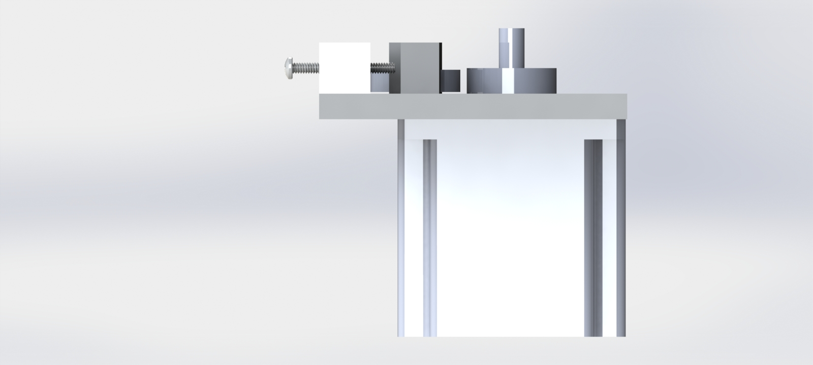

BendU
Hardware
We initially started out to create a machine that created bent, breadboardable wires. We later pivoted to a wire bending machine. The mechanical system of our project has two main subsystems: wire feeder and wire bender.
Sprint 1
October 25 2015
Sprint Goal: Create a working, integrated prototype that can cut and feed wire.
For the first sprint our group focused on getting a prototype of two of our core mechanical systems for the breadboardable wire project working with motor control: the cutting mechanism and the feeding mechanism
The first sprint was spent ideating around how we we would prototype our cutting and feeding mechanisms. final goal was a cutting mechanism that could be controlled. By controlling how much the mechanism cuts we would allow our project to both strip and cut and wire. For a prototype we adapted a manual wire stripper that was controlled by a stepper motor that adjusted the amount the stripper was closed by pulling a wire connecting the handles.

We modeled our feeding mechanism after industrial feeding mechanisms. Wire is fitted between two wheels: one which was connected to a stepper motor with high torque and the other was free to rotate.
Mechanical Lessons from the Sprint
Both the feeding and cutting mechanism ran into during testing due to the tolerances on the wheels(the wire wouldn't fit) and issues with the torque provided by the motors being insufficient to push the wire through at a reasonable pace
Sprint 2
November 8 2015
Sprint Goal: Create a working, integrated wire feeding system.

This specific sprint we machined an improved version of our previous wire feeding prototype. The wire is pulled between two wheels: one connected to a stepper motor with higher torque and the other connected to an adjustable base and left free to rotate.
Mechanical Lessons from the the Sprint
While testing our feeding system we discovered that our new motors had enough torque but required a high amount of pressure between the two wheels to have enough grip to pull the wire through.
Sprint 3
November 10 2015
Sprint Goal: Create a working integrated product with the wire feeding and bending system.
For the third sprint our group focused on getting a working wire feeding system and bending system with basic controls. In particular, we primarily worked on developing a 3D printed mount for our bending mechanism. The bending mechanism was designed to work by applying a pressure against the wire via a roller wheel driven by a servo motor. The wire was guided to the bending mechanism via brass guide tubes in order to maintain straightness of the wire.
Mechanical Lessons from the the Sprint
We found that the precision of the device was lacking. This may have been due to excessive friction within the system due to not being fed straight into the brass tube. Consequently, we are looking at solutions that range from minimizing the degrees of freedom of the wire to looking at the accuracy of the software feed.
Sprint 4
December 1 2015
Sprint Goal: Create our MVP by integrating software systems, refining mechanical systems, and moving electrical systems to protoboard
For the fourth sprint, we worked primarily on refining the current structure into a more accurately performing and aesthetic design. We redesigned parts that were previously 3D-printed such as the bending mechanism mount and the bending mechanism itself to be composed of metal. Furthermore, in order to reduce friction within the system, we moved to creating a funnel for wire to feed through in lieu of previous brass guide tubes. We also designed a laser-cut MDF box to store electronic hardware for asthetic purposes.
Mechanical Lessons from the the Sprint
We found that 3D-printed material was not nearly strong enough for the bending mechanism. Our bending motor exerts a significant amount of torque to bend the magnet wire, which the 3-D were not able to support satisfactorily. As a result, looking forward to future projects, we would plan with the awareness that PLA 3D-printed parts are non-ideal for surviving mechanical stresses.
Final CAD Diagrams: 12/1/15
Final CAD model diagrams of our wire bending machine: Front View  Side View Top View
Future Improvements
Some future improvements that could be made include: bi-directional bending capability, extra axes for bending, and improving the precision of the device. The bi-directional bending could be done by implementing a solenoid to control the height of the bending post, allowing the post to travel under the wire and bend from both sides. Extra axes could be implemented by allowing rotation of the bender and creation of 3 dimensional wire figures. Precision could be improved by mounting introducing a straightening system to ensure the wire in place and straight while being bent.